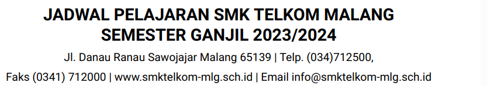
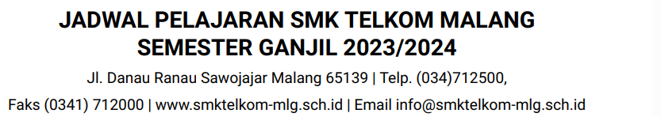

|  |
Nama : Rivaldo Rizky Habibie
Kelas : XI R5
Absen : 35
|  |
| XIR5 | |||||||||||
| UPACARA 06.30 - 07.15 |
Doa / Dhuha 07.15 - 08.15 |
1 08.15 - 09.00 |
3 09.00 - 09.45 |
2 09.45 - 10.15 |
4 10.15 - 11.00 |
5 11.00 - 11.45 |
Dhuhur 11.45 - 12.45 |
7 12.45 - 13.30 |
8 13.30 - 14.15 |
9 14.15 - 15.00 |
|
| SENIN | Penjas | Penjas | Bahasa Jawa | Bahasa Indonesia | Bahasa Indonesia | Matematika | Matematika | ||||
| Doa / Dhuha 06.30 - 07.30 |
2 07.30 - 08.15 |
3 08.15 - 09.00 |
4 09.00 - 09.45 |
Istirahat 09.45 - 10.15 |
6 10.15 - 11.00 |
7 11.00 - 11.45 |
Dhuhur 11.45 - 12.45 |
9 12.45 - 13.30 |
10 13.30 - 14.15 |
11 14.15 - 15.00 |
|
| SELASA | RPL | Bimbingan Konseling | Bahasa Inggris | Bahasa Inggris | TKJ | TKJ | Sejarah Indonesia | Sejarah Indonesia | |||
| RABU | RPL | RPL | RPL | RPL | Pend Agama & Budi Pekerti |
Pend Agama & Budi Pekerti |
Tahfidz | Mata Pelajaran Pilihan Desain Grafis |
|||
| KAMIS | RPL | RPL | RPL | RPL | RPL | RPL | Pend.Pancasila & Kewarganegaraan |
Pend.Pancasila & Kewarganegaraan |
|||
| Jumat Pagi 06.30 - 07.15 |
Istirahat 07.15 - 07.45 |
1 07.45 - 08.30 |
2 08.30 - 09.15 |
3 09.15 - 10.00 |
4 10.00 - 10.45 |
Doa / Dhuha 10.45 - 11.30 |
Sholat Jumat 11.300 - 12.45 |
5 12.45 - 13.30 |
6 13.30 - 14.15 |
7 14.15 - 15.00 |
|
| JUMAT | RPL | RPL | RPl | Bahasa Inggris | RPL | RPL | RPL | ||||